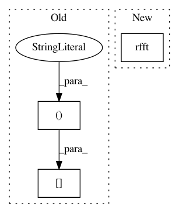

fe8a6175dc98c7bc3b667fe88afcb5c2a4c94169,kapre/stft.py,Stft,call,#Stft#Any#Any#,144
Before Change
def call(self, x, mask=None):
"""computes spectrorgram ** power."""
output = self._spectrogram_mono(x[:, 0:1, :])
if self.is_mono is False:
for ch_idx in range(1, self.n_ch):
output = K.concatenate((output,
After Change
def call(self, x, mask=None):
"""computes stft ** power."""
for fr_idx in range(self.n_frame):
X_frame_power = K.sum(K.square(fft.rfft(
self.fft_window * x[:, :, fr_idx * self.n_hop :
fr_idx * self.n_hop + self.n_fft]
)), axis=3, keepdims=True)
if fr_idx == 0:
output = X_frame_power
else:
In pattern: SUPERPATTERN
Frequency: 3
Non-data size: 3
Instances
Project Name: keunwoochoi/kapre
Commit Name: fe8a6175dc98c7bc3b667fe88afcb5c2a4c94169
Time: 2017-01-17
Author: gnuchoi+github@gmail.com
File Name: kapre/stft.py
Class Name: Stft
Method Name: call
Project Name: librosa/librosa
Commit Name: 84d7770cb65a52231b64f6822d3adb889b35ffa6
Time: 2014-01-15
Author: brm2132@columbia.edu
File Name: librosa/core.py
Class Name:
Method Name: stft
Project Name: mne-tools/mne-python
Commit Name: 9f231cfa8416b5bfe06dc996fa6d50c87b488d37
Time: 2021-01-07
Author: larson.eric.d@gmail.com
File Name: mne/time_frequency/_stft.py
Class Name:
Method Name: stft